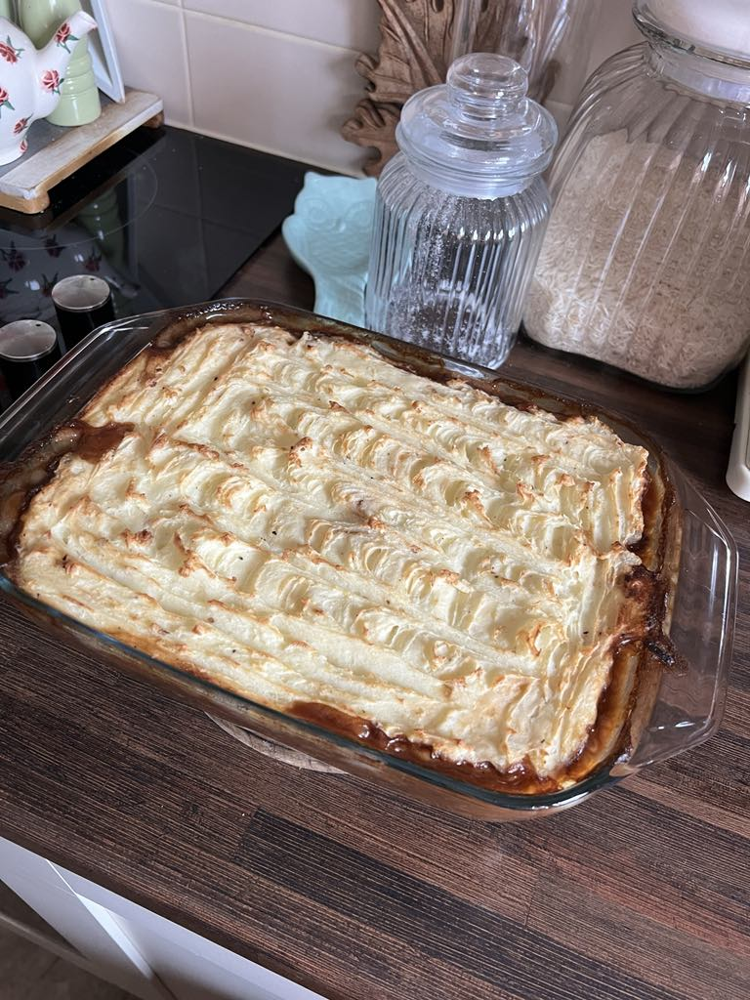

Cottage Pie Recipe

Description
Serves 4 approximately
This hearty cottage pie is full of comforting vegetables and minced beef covered in a delicious gravy and topped with fluffy mashed potatoes, which will create a satisfying crispy layer when baked in the oven.
This one is sure to please your family, guests or is equally enjoyed by one over many nights.
Ingredients
- 1kg potatoes
- 500g lean beef mince
- 1 large onion
- 3 carrots diced
- 3 garlic cloves finely chopped
- 1 tablespoon olive oil
- 1 beef stock pot or cube
- 1 beef oxo cube
- 1 tablespoon worcestershire sauce
- 1 tablespoon soy sauce
- 1 tablespoon ground black pepper
- semi-skimmed milk
- half teaspoon ground white pepper
- half teaspoon ground black pepper
- two or three tablespoons beef gravy powder
Method
- Peel and chop potatoes, boil on high until cooked.
While potatoes are boiling prepare meat filling for the pie
- Heat pan with a tablespoon of olive oil. Add chopped onion and garlic and cook at medium heat for 5 minutes.
- Add uncooked mince to the pan, turn heat up to high and break down the mince as it cooks.
- Once mince is browned add stock, oxo and chopped carrots, cook for a few minutes before adding gravy, worcestershire sauce, soy sauce and black pepper. Cook on low while potatoes are being prepped to be mashed.
- Once potatoes are boiled, remove from heat. Mash potatoes and add white and black pepper, semi-skimmed milk and olive oil. Whip the potatoes with a mixer for a fluffy mash
- In an oven-proof dish add the meat mixture. Top the meat with the mashed potatoes and spread evenly until the meat is covered.
- Cook in oven at 200c for 40 minutes or until mash is crispy and golden on top.
serve and enjoy!
Back to recipes